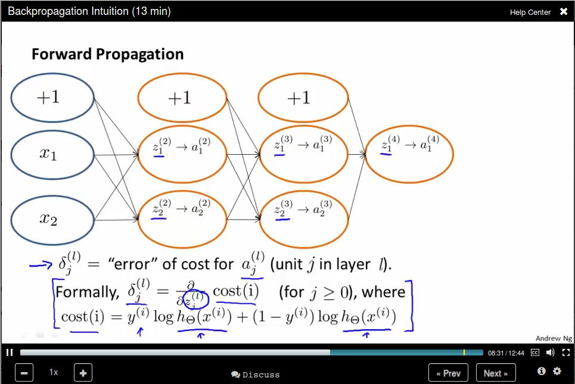

Stanford Machine Learning Notes
Info
Introduciton
What is machine learning
- Arthur Samuel (1959): Field of study of that gives computers the ability to learn without being explicitly programmed.
- Tom Mitchel (1998): A Well-posed Learning Problem is *A computer program is said to learn from experience E with repsect to some task T and some performance measure P, if its performance on T, as measured by P, improves with experience E.
Machine learning algorithms:
We mainly talks about two types of algorithm:
- Supervised Learning
- Unsupervised Learning
- Others: Reinforcement Learning, Recommender System.
And Practical advice for applying learning algorithm
Supervised Learning
"Right Answers" are given.


Linear Regression (Week 1)
Model Representation
Notations:
- \(m\) is Number of training examples.
- \(x\)'s is "input" variable / feature.
- \(y\)'s is "output" variable / "target" variables.
- \((x,y)\) is one training example.
- \((x^{(i)},y^{(i)})\) is the \(i\)th example, \(i\) starts from \(0\).
- \(h\) is called hypothesis, it maps the input to output. In this lecture, we represent \(h\) using linear function, thus it's called linear regression. For linear regression with one variable, it's called univariate linear regression. For example, the univariate linear regression is usually written as: \(h_\theta (x) = \theta_0 + \theta_1 x\). The \(\theta\) here represents the coefficient variables. Sometimes it's written as \(h(x)\) as a shorthand.
Cost Function
Since the hypothesis is written as \(h_\theta (x) = \theta_0 + \theta_1 x\), where \(\theta_i\)'s are the parameters, then how to choose \(\theta_i\)'s? The idea is to choose \(\theta_0, \theta_1\) so that \(h_\theta (x)\) is close to \(y\) for our training examples \((x,y)\). More formally, we want to \[ \underset{\theta_0,\theta_1}{\text{minimize}} \frac{1}{2m}\sum_{i=1}^{m}\left( h_\theta(x^{(i)}) - y^{(i)} \right)^2 \], where \(m\) is the number of trainnig examples. To recap, we're minimizing half of the averaging error. Note that the variable here are \(\theta\)s, and \(x\) and \(y\)'s are constants.
By convention, we define the cost function \(J(\theta_0,\theta_1)\) to represent the objective function. That is
\begin{gather*} J(\theta_0,\theta_1) = \frac{1}{2m}\sum_{i=1}^{m}\left( h_\theta(x^{(i)}) - y^{(i)} \right)^2 \\ \underset{\theta_0,\theta_1}{\text{minimize}} J(\theta_0,\theta_1) \end{gather*}This cost function is also called squared error function. There are other cost functions, but it turns out that squared error function is a resonable choice and will work for most of regression problem.
Cost Function Intuition
Before getting a intuition about the cost function, let's have a recap, we now have
- Hypothesis: \[h_\theta (x) = \theta_0 + \theta_1 x\]
- Parameters: \[\theta_0,\theta_1\]
- Cost Function: \[J(\theta_0,\theta_1) = \frac{1}{2m}\sum_{i=1}^{m}\left( h_\theta(x^{(i)}) - y^{(i)} \right)^2 \]
- Goal: \[\underset{\theta_0,\theta_1}{\text{minimize}} J(\theta_0,\theta_1)\]
In order to visualize our cost function, we use a simplified hypothesis function: \(h_\theta (x) = \theta_1 x\), which sets \(\theta_0\) to \(0\). So now we have
- Hypothesis: \[h_\theta (x) = \theta_1 x\]
- Parameters: \[\theta_1\]
- Cost Function: \[J(\theta_1) = \frac{1}{2m}\sum_{i=1}^{m}\left( h_\theta(x^{(i)}) - y^{(i)} \right)^2 \]
- Goal: \[\underset{\theta_1}{\text{minimize}} J(\theta_1)\]
So now let's compare function \(h_\theta (x)\) and function \(J(\theta_1)\):

Then let's come back to the original function, where we don't have the constrain that \(\theta_0 = 0\). The comparison is like
Gradient Descent
Now we have some function \(J(\theta_0,\theta_1)\) and we want to \(\underset{\theta_0,\theta_1}{\text{minimize}}J(\theta_0,\theta_1)\), we use gradient descent here, which
- Start with some \(\theta_0,\theta_1\),
- Keep changing \(\theta_0,\theta_1\) to reduce \(J(\theta_0,\theta_1)\), until we hopefully end up at a minimum.
To help understand gradient descent, suppose you are standing at one point on the hill, and you want to take a small step to step downhill as quickly as possible, then you would choose the deepest direction to downhill.
 You keep doing this until to get to a local minimum.
You keep doing this until to get to a local minimum.

But if you start with a different initial position, gradient descent will take you to a (very) different position.
Gradient Descent algorithm
We use \(a := b\) to represent assignment and \( a = b\) to represent truth assertion.
The \(\alpha\) here is called learning rate.
Pay attention that when implementing gradient descent, we need to update all \(\theta\text{s}\) simultaneous.

Recall that \(\alpha\) is a called the learning rate, which is actually a scale factor to our step represented by the derivative term. Take a 1D case as an example, the derivative is the direction (slop of the tanget line) where the function value becomes larger, so we should take its negative as our step.

If \(\alpha\) is too small, gradient descent can be slow. If \(\alpha\) is too large, gradient can overshoot the minimum. It may fail to converge, or even diverge.
Gradient descent can converge to a local minimum, even with the learning rate \(\alpha\) fixed. This is because as we approach a local minimum, gradient descent will automatically take smaller steps. So no need to descrease \(\alpha\) over time.
Batch Gradient descent: Each step of gradient descent uses all the training examples:
Linear Algebra (Week1, Optional)
This lecture use 1-indexed subscripts.
Linear Regression with Multiple Variables (Week 2)
Multiple Features
 Notation:
Notation:
- number of features: \(n\)
- input (features) of \(i^{\text{th}}\) training example: \(x^{(i)}\)
- value of feature \(j\) in \(i^{th}\) training example. \(x^{(i)}_{j}\)
Now our hypothesis is \(h_\theta (x) = \theta_0 + \theta_1 x_1 + \theta_2 x_2 + \dots + \theta_n x_n \). For convenience of notation, define \(x_0 = 1\), or \(x^{(i)}_0 = 1\). So now we define our hypothesis as
\begin{equation*} \begin{split} h_\theta (x) &= \theta_0 x_0 + \theta_1 x_1 + \theta_2 x_2 + \dots + \theta_n x_n \\ &= \theta x \end{split} \end{equation*}where \(\theta\) is a \(n+1\) dimension vector.
Gradient Descent for Multiple Variables
So now our new algorithm becomes Note that our new algorithm for \(\theta_0\) is just like the old one since \(x_0^{(i)} \) is 1.
Gradient Descent in Practice - Feature Scaling.
Idea: Make sure features are on a similar scale, then gradient descent will converge more quickly.
Take a 2D example, if the dimension of \(x_1\) is much larger than the dimension of \(x_2\), then the search region is a long ellipsis shape which is make gradient much difficult to find the minimum. We can rescale all features to [0,1] so the contours now become a circle.
Usually we get every feature into approximately a \(-1 \leq x \leq 1\) range. But it need not to be exactly. Say \(-3 \leq x \leq 3 \) is OK.
Mean normalization: Replace \(x_i\) with \(x_i - \mu_i\) to make features have approximately zero mean. Note that this does not apply to \(x_0 = 1\).
Gradient Descent in Practice - Learning Rate.
To make sure gradient descent is working correctly, draw the figure the value of \(J(\theta)\) versus the number of iterations.

For sufficiently small \(\alpha\), \(J(\theta\) should decrease on every iteration. But if \(\alpha\) is too small, gradient descent can converge too slow. To choose \(\alpha\) try \( \dots, 0.001, 0.003,0.01, 0.03,0.1, 0.3,1, \dots\), roughly a 3x larger.
Features and Polynomial Regression
You need to choose a good feature instead of just using what you're provided. For example, for housing price prediction, you are provided with the frontage and depth feature, you can define a feature called area = frontage x depth.

Or sometimes use a polynomial function would be better. If the feature is not enough, you could use size, size^2, size^3 as features.
Or you can use square root as feature.
 How to find the minimum of \(J(\theta)\) analytically?
How to find the minimum of \(J(\theta)\) analytically?
By Calculus, we can take the partial derivatives of each variable, and set it to 0.
Normal Equation: Then we can compute \(\theta = (X^T X)^{-1} X^T y\) The Octave code is:
pinv(X' * X) * X' * y
Compare Gradient Descent with Normal Equation.
Normal Equation and Noninvertbility (Optional)
Use pinv in Octave should not be a problem.
What if \(X^T X\) is non-invertible?
- Reduent features (linearyly dependant). E.g. \(x_1\) = size in feet, \(x_2\) size in m^2.
- Too many features (e.g. $m ≤ n). Delete some features, or use regulariation.
Octave Tutorial
Basic Operation
5+6 3-2 5*8 1/2 2^6 1 == 2 %false 1 ~= 2 1 && 0 1 || 0 xor(1,0) %XOR PS1('>> '); % to change the prompt sign a = 3; % semicolon supressing output a disp(a); disp(sprintf('2 decimals: %0.2f', a)) a format long a format short a A = [1 2; 3 4; 5 6] A = [1 2 3 4 5 6] v = [1 2 3] v = 1:0.1:2 ones(2,3) C = 2*ones(2,3) C = [2 2 2; 2 2 2] w = ones(1,3) w = zeros(1,3) w = rand(1,3) rand(3,3) rand(3,3) w = randn(1,3) % guassian distribution w = -6 + sqrt(10)*(randn(1,10000)); % you don't want to omit the semicolon here hist(w) hist(w,50) eye(4) % identity matrix I = eye(6) help eye
Move data around
A = [1 2; 3 5; 5 6] size(A) sz = size(A) size(A,1) v = [1 2 3 4] length(v) length(A) length([1;2;3;4;5]) pwd cd .. ls load('test.dat') who whos save hello.mat v save hello.txt v -ascii clear A = [1 2 ; 3 4; 5 6]; A(3,2) A(:,2) A([1 3], :) A(:,2) = [10; 11; 12] A = [A, [ 100, 101, 102]]; A(:) % put all elements of A into a single vector A = [1 2; 3 4; 5 7]; B = [11 12; 13 14; 15 16]; C = [A B] C = [A,B] D = [A; B]
Computing on Data
A = [1 2; 3 4; 5 6]; B = [11 12; 13 14; 15 16]; C = [11 12; 13 14] A.*B A.^2 v = [1; 2; 3] 1 ./ v 1 ./ A log(v) exp(v) abs(v) abs([-1; 2; -3]) -v v + ones(length(v),1) v + 1 A' (A')' a = [1 15 2 0.5] val = max(a) [val, ind] = max(a) max(A) a < 3 A = magic(3) [r,c] = find(A >= 7) sum(a) prod(a) floor(a) ceil(a) max(A,[],1) % colomn wise max max(A,[],2) % row wise max max(A) max(max(A)) max(A(:)) % find max of all the elements A = magic(9) sum(A,1) % column wise sum sum(sum(A .* (eye(9)))) % sum the diagonal values sum(sum(A .*flipud(eye(9)))) % sum the subdiagonal values pinv(A) # sudo inverse temp = pinv(A) temp * A
Plotting Data
t = [0:0.01:0.98]; y1 = sin(2*pi*4*t); plot(t,y1); y2 = cos(2*pi*4*t); plot(t,y2); plot(t,y1); hold on; plot(t,y2,'r'); xlabel('time'); ylabel('value'); legend('sin','cos'); title('my plot'); print -dpng 'myPlot.png' close figure(1); plot(t,y1); figure(2); plot(t,y2); subplot(1,2,1)% divides plot into a 1x2 grid, access first element plot(t,y1); subplot(1,2,2); plot(t,y2); axis([0.5 1 -1 1]) % change horizontal range to [0.5,1] and vertical to [-1,1] A = magic(5) imagesc(A) imagesc(A), colorbar, colormap gray; % use comma for command chainning, for ouput, which is different from semicolon
Control Statements
v = zeros(10,1) for i = 1:10, v(i) = 2^i; end; i = 1; while i <= 5, v(i) = 100; end i = 1; while true, v(i) = 999; i = i + 1; if( i == 6), break; end; end;
Vectorizatrion
\(h_\theta(x) = \sum_{j=0}^{n} \theta_j x_j = \theta^T x\)
%unvectorized implemenetation predictaion = 0.0; for j = 1;n+1, prediction = prediction + theta(j) * x(j) end; %vectorized implementation prediction = thteta' * x;
Logistic Regression (Week 3)
Classification (8min)
Applying linear regression to a classification problem is not a good idea.
You can use 0.5 as a threshhold to do the prediction based on the h_θ(x) value. However, this is not a good idea since when adding a new sample point, the hypothesis will change. Besides, the return value for h_θ(x) could be not in the range [0, 1], thus making the prediction rather confusing. Logistic Regression, though the word regression, is used to do the classification job and the hypothesis can be guaranteed in the range [0,1].
Hypothesis Representation
Logistic Regression Model
We set \(h_\theta(x) = g(\theta^Tx)\), where \(g(z) = \frac{1}{1+e^{-z}}\). The \(g\) function is called Sigmoid function as well as Logistic function.
Interpretation of Hypothesis Output
You can think of \(h_\theta(x)\) as the estimated probability that \(y = 1\) on input \(x\).
Decision Boundary
It's a line that separates the regions where the hypothesis predicts 1 or 0.
Since \(g(z) \geq 0.5\) when \(z \geq 0.5\), which means that \(h_\theta(x) \geq 0.5\) whenever \(\theta^{T} x \geq 0\)
Cost Function
How to fit the parameters θ for Logistic Regression? We define the cost function as below since \(h_\theta(x)\) is in the range [0,1].
Simplified Cost Function and Gradient Descent
Remember that the Logistic regression cost function is in two parts, since y can be 0 or 1 only, we can write the cost function in a new way:
Remember that gradient descent is like:
where the partial derivatives is like:

Advance Optimization
Note that the Octave start from 1 instead of 0.
Multiclass Classification: One-vs-all
One-vs-all is also called one-vs-rest.
The method is:
Regulation (Week 3)
The problem of Overfitting

For Logistic regression:
How to solve the problem?
Cost Function
The idea behind regulation is that: Note that we didn't penalize θ_0
What if λ is too large?

Regularized linear regression
When using normal equation:
Regularized Logistic Regression
Now update θ_0 separately
Neural Networks: Representation
Non-linear Hypotheses
Use quadratic features will results in a lot of features.
Neurons and the Brain
There is one learning algorithm of the brain
Model Representation I
Neuron model: Logistic unit
Neural Network is a group of this neural.
Model Representation II
Forward propagation: Vectorized implementation
Bias unit:
The last layer is like Logistic Regression, but Neural Network learning its own features.
Examples and Intuitions I
OR Function
Examples and Intuitions II
NOT Function
The input layer has only x_1 and x_2. The second layer compute the feature (x_1 AND x_2), and the feature (NOT x_1) AND (NOT x_2). The third layer use the feature computed in layer 2 and do an OR operation to simulates a XNOR operation.
Handwritten digit classification
Mutilcass Classification
Use an extension of the One-vs-all method.
Neural Networks: Learning (Week 5)
Cost Function
This is the cost function
Backpropagation Algorithm
Forward Propagation, computing all the activations:
Backpropagation algorithm, computing the gradient:
The name "back" comes from the order we compute the "error" Backpropagation algorithm
Backpropagation Intuition

Implementation Notes Unrolling Parameters
In Neural Network our parameters are matrices, and we need to unroll it into vectors.
Gradient Checking
Use nummerical estimation of gradients to check.
Random Initialization
We need to provide an initial value for gradient fescent and advanced optimization method.
Zero Initialization will result in identical values.
To solve this problem, we use random initialization to break the symmerty.
Put it together
How to train a neural network
Advice for Applying machine Learning
Deciding What to Try Next
- Get more training examples
- Try smaller sets of features
- Try getting additional features.
- Try adding polynomial features
- Try decreasing λ.
- Try increasing λ.
Evaluating a Hypothesis
Hypothesis can be overfitting.
We can evaluate our hypothesis by separate our date into training set and test set.
Model Selection and Train/Validation/Test Sets
To address this problem, we divide our data set into three parts: training set, cross validation set, and test set.
Use cross validation error to selection the model degree and use test set error to select θ.
Diagonosing Bias vs Variance
Bias (undearfit) Variance (overfit)